Photos
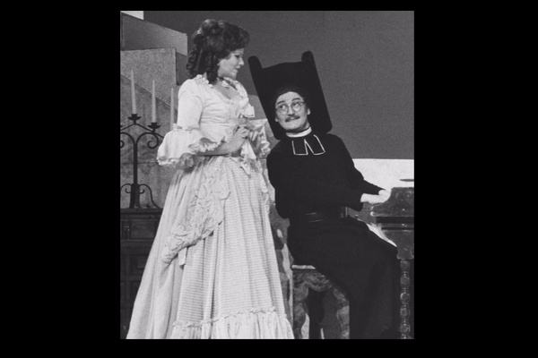
THE BARBER OF SEVILLE

CRESTWOOD (I'm the one on the right)

ON BOARD | MID-PACIFIC
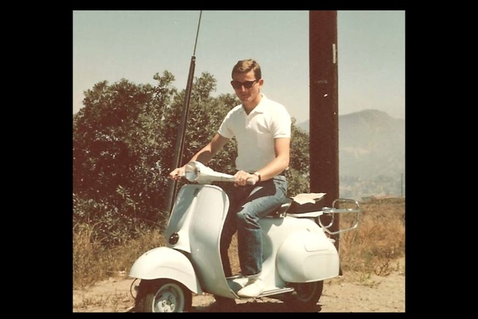
MY CALIFORNIA WHEELS
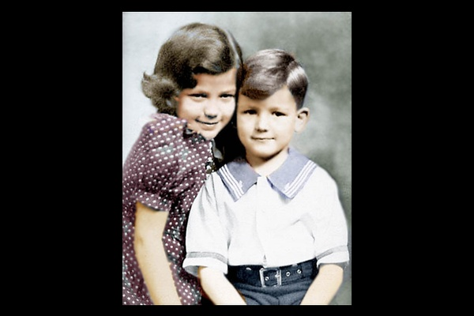
ME & MY LATE SISTER MARY
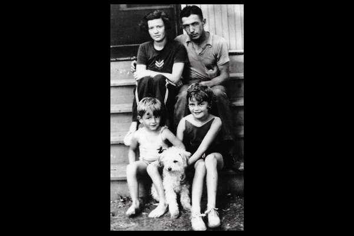
MOM, DAD, MARY, ME, & THE DOG
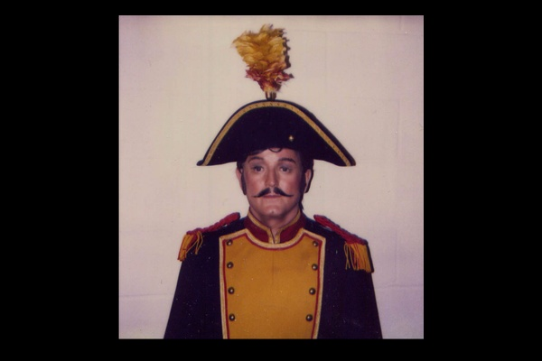
CARMEN
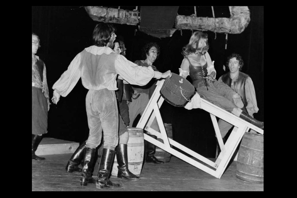
THE MAN OF LA MANCHA (1972)
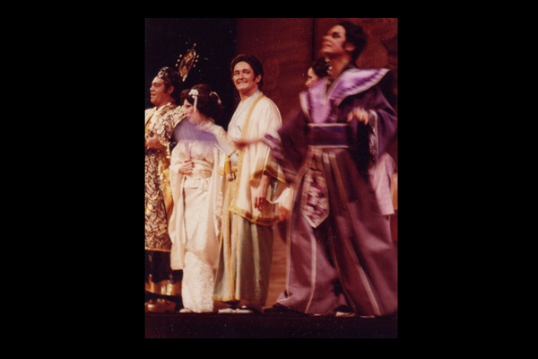
MIKADO
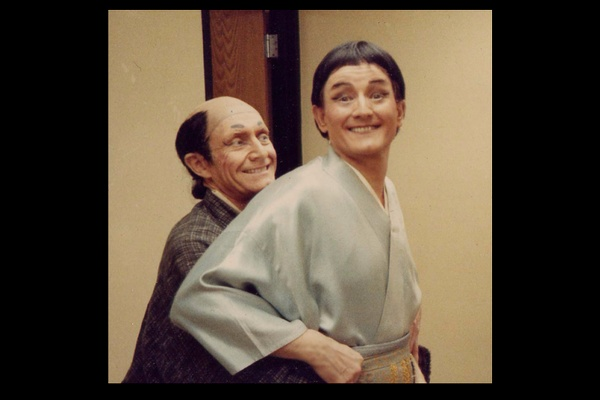
MIKADO (1985)
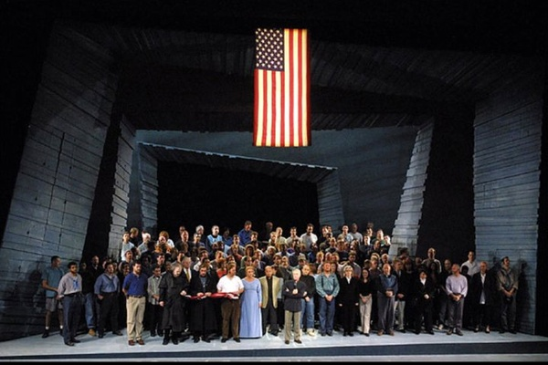
911 TRIBUTE | NYC Opera
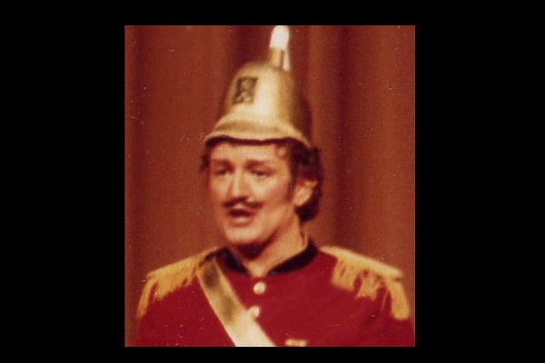
PATIENCE
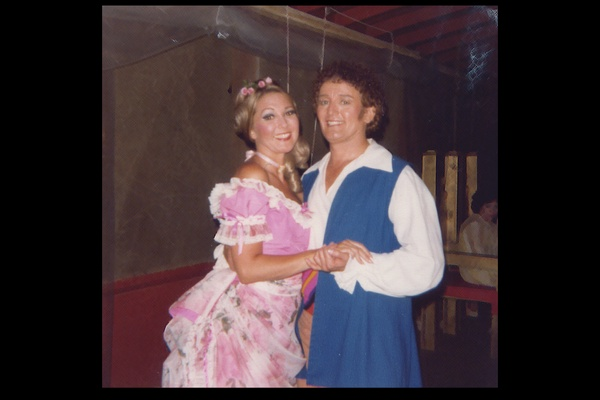
THE PIRATES OF PENZANCE
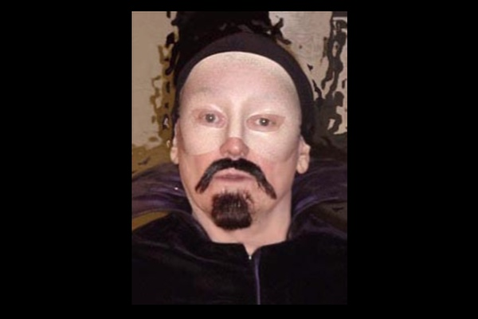
RIGOLETTO | NYC Opera, 2001
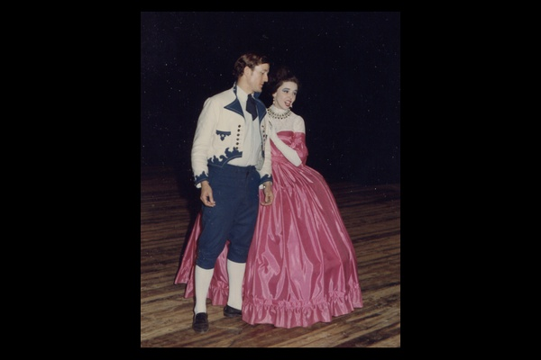
THE SONG OF NORWAY
TURANDOT | NYC Opera
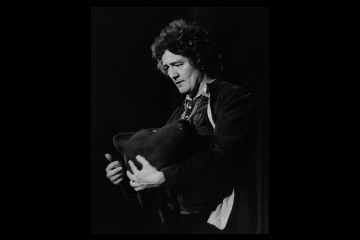
THE BARTERED BRIDE (1973)
MY SISTER JUDY
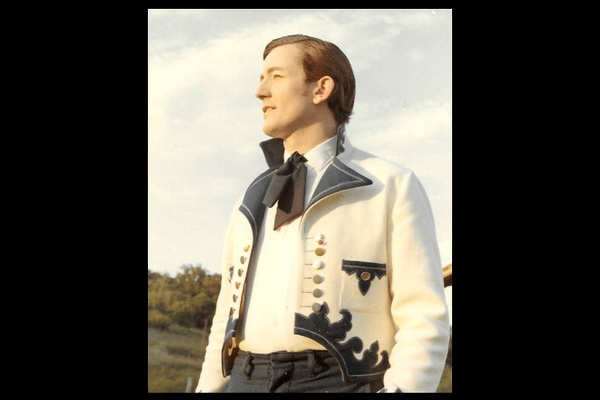
SONG OF NORWAY
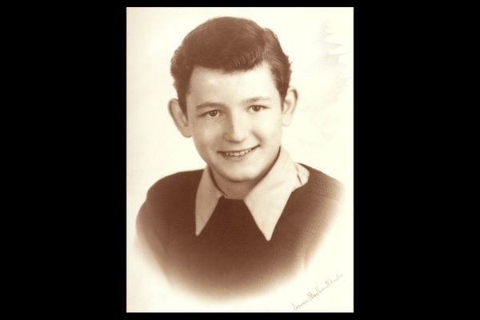
YOUNG
HOUSE OF THE DEAD | NYC Opera, 1990
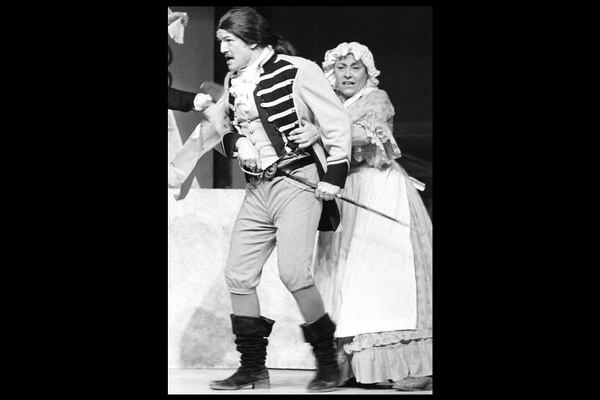
BARBER OF SEVILLE | Westchester, NY
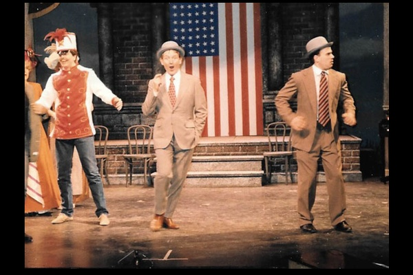
THE MUSIC MAN (1986)

CARNEGIE HALL DEBUT | NYC, 1994
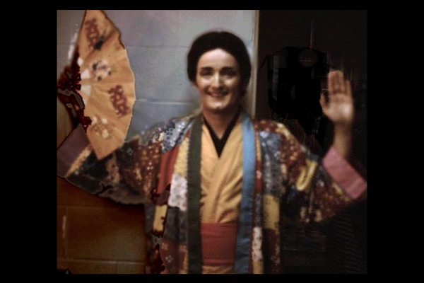
MIKADO (Nanki-Poo)
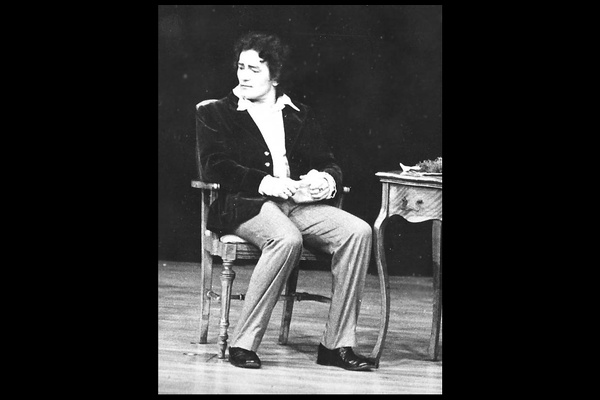
LA TRAVIATA (Act II) | Westchester, NY
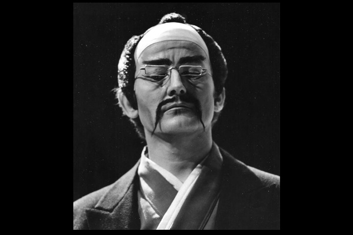
GORO | NYC Opera